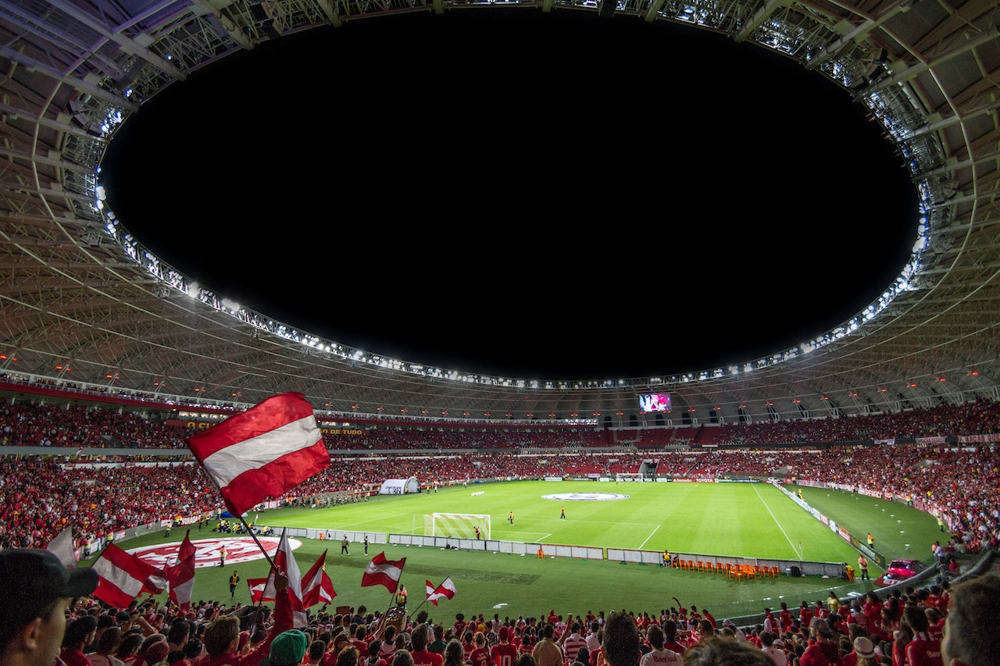

Equips
- Almería
- Athletic Club
- Atlético de Madrid
- FC Barcelona
- Real Betis
- Cádiz
- Celta de Vigo
- Elche
- Espanyol
- Getafe
- Girona
- Real Mallorca
- Osasuna
- Rayo Vallecano
- Real Madrid
- Real Sociedad
- Sevilla
- Valencia
- Valladolid
- Villarreal

Jornada generada